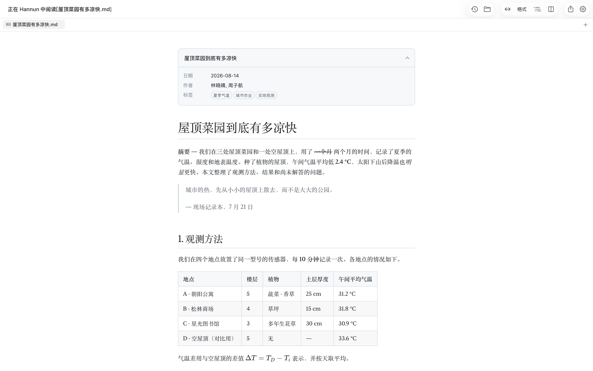
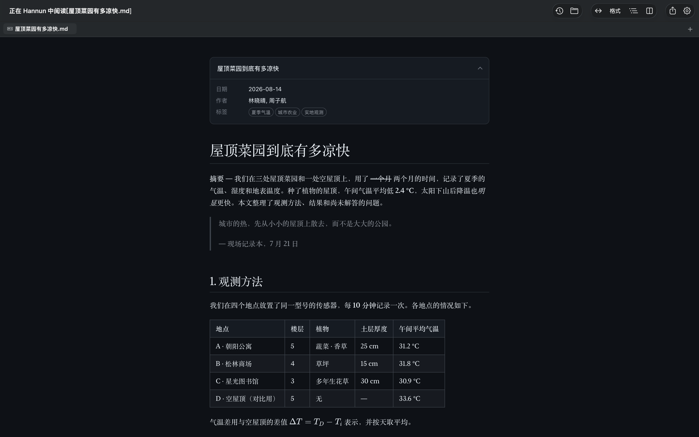
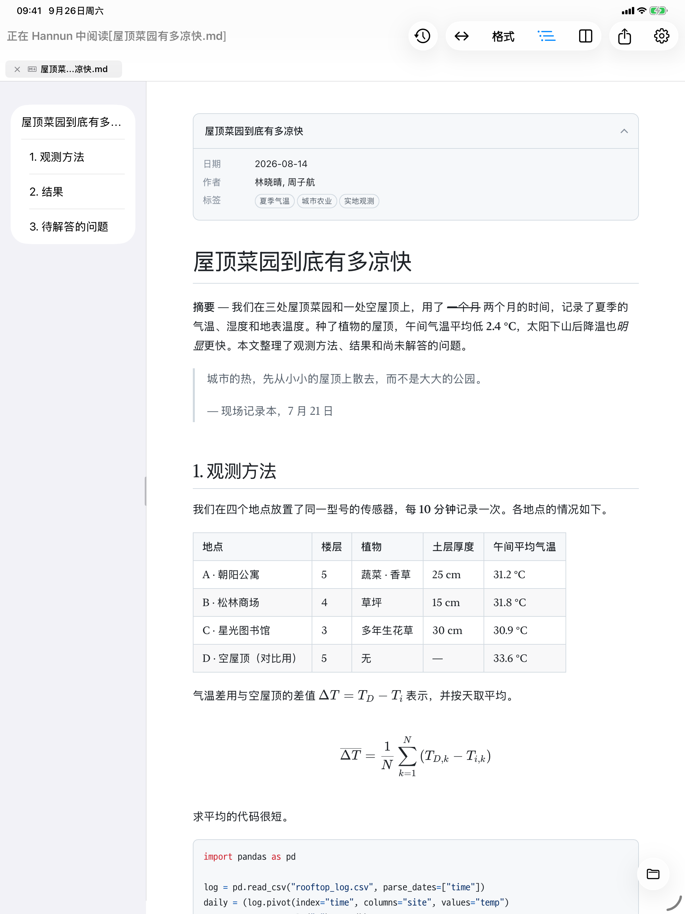
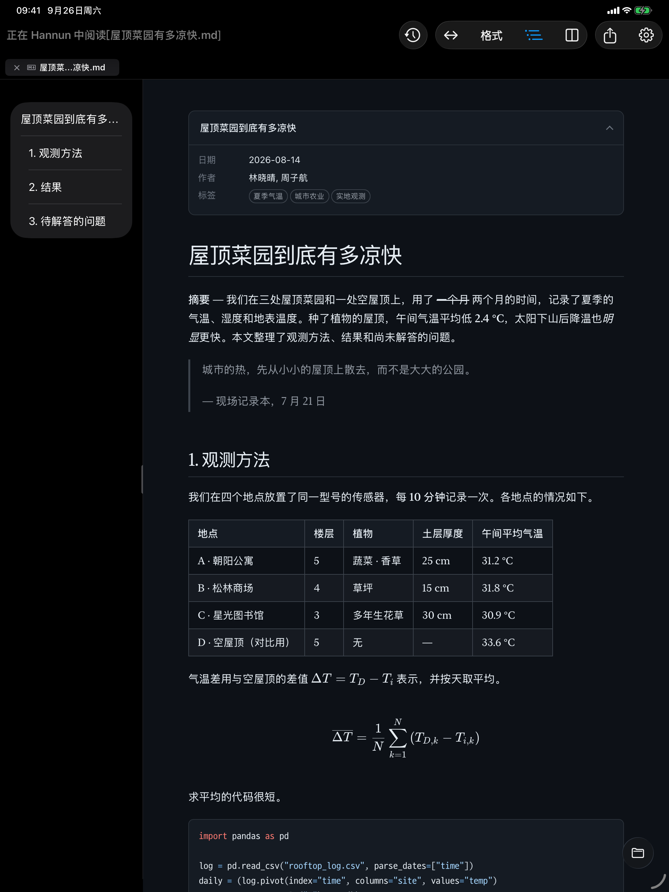
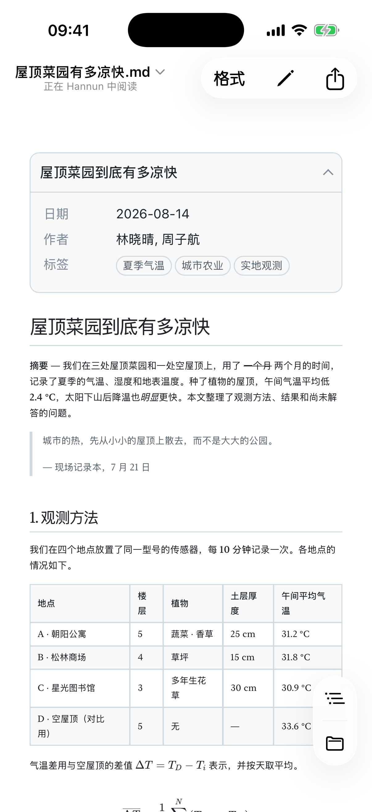
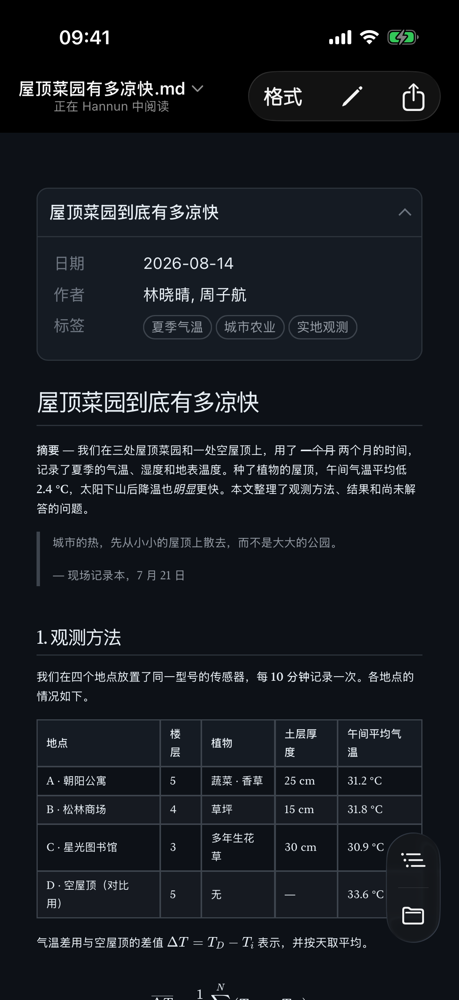

Markdown 阅读器MaciPadiPhone
Markdown 文件，
双击就能看。
Hannun 来自韩语「한눈」，意思是一眼看全
。打开 Markdown 文件不该费功夫——所以我们让它一打开，就清清楚楚。
上面不是截图，而是和 Hannun 使用同一套引擎、真正在运行的窗口。随便改改看——你输入的内容不会离开这个浏览器。
不打扰手头的工作
只是想看一个无关的 Markdown 文件，不想把正在开着的项目或浏览器弄乱。
用 VS Code 打开混进当前项目窗口拖进浏览器又多一个标签页安装扩展并开启文件访问权限藏在设置某处- 双击文件单独打开，看完关掉就好
也不用先打开应用再去找文件。直接打开文件就行。
原文件，
原样保留。
保存时不改动编码、BOM 和换行格式。改一个字，就只变这一个字。
如果文档用 Git 管理，这点差别就很关键。换行符或编码一变，明明只改了一行，git diff 却显示整个文件都变了。用 Hannun 保存，diff 里只留下你真正改动的那几行，审阅的人看得清楚，日后回看也不会糊涂。
示例：保存时会重新对齐表格、按自己的习惯改写列表符号和换行符的编辑器
只有改过的那一行会变
再长的文档，也读得舒服
表格、复选框、代码高亮、公式、图表，都能清爽地呈现。正文宽度和字体，按你的习惯来选。
现在就在这个页面试试。点按下面的按钮，你正在看的这一页会马上跟着变。
正文和标题可以分别设置。宋体标题配黑体正文，反过来也行。在 App 里，点按工具栏的“格式”按钮就能直接切换，不用进设置。
- 目录把文档标题汇总到左侧面板。面板宽度可以拖动调整，下次打开时保持不变。
- 放大点按图片和图表即可放大查看。图表是矢量的，放多大都清晰。
- 深色模式可选浅色、深色或跟随系统。
- 缩放双指捏合，或按 ⌘+ ⌘−。预览、编辑器和 PDF 用的都是同一种方式。
边看边改
一个 ⌘/，就能在预览、分栏和编辑之间切换。分栏时，左右两边会同步滚动。
语法也不用死记。按住 ⌥，就会出现按键盘布局排好的语法面板。同一个键再按一次，即可取消。
- 中文输入用拼音等输入法打字时，应用不会中途插手，也不会擅自改格式。
- 查找与替换在预览、编辑器和 PDF 中，都用同样的方式查找和替换。
像记事本一样写，
关掉也还在
像 Windows 的记事本一样，按 ⌘N 就能直接开写，不用起文件名，也不用选保存位置。
关掉 App 再打开，没写完的内容还在原处。用完可以直接丢掉，想留下时再按 ⌘S 保存，可以选择 .md 或 .txt 格式。
JSON、XML、PDF 也能打开
数据文件可以折叠、展开着看。默认以和编辑器相同的源文本打开，也可以切换成只保留名称和值的树，或按键、类型、值分栏显示的列表。在树视图里，结构相同的条目连在一起时会自动整理成表格。无论用哪种方式查看，数字和值都与文件中写的完全一致。
用下方窗口顶部的按钮切换看看。
Mac、iPad、iPhone 都能用
在 Mac 上，在访达中双击即可；在 iPad 和 iPhone 上，直接打开“文件”App 里的文档。改动会保存到原文件。
浅色和深色模式跟随系统设置。左右拖动下方画面中间的分界线，对比一下。






该有的功能，都有
文档
- GFM 表格 · 复选框 · 删除线
- 代码高亮
- KaTeX 公式
- Mermaid 图表 22 种
- YAML Front Matter 卡片
- 文档间链接 新标签页
阅读
- 正文宽度 4 档
- 正文 · 标题字体分别设置
- 目录面板
- 图片 · 图表放大
- 浅色 · 深色 · 自动
编辑
- 预览 · 分栏 · 编辑
- 同步滚动
- 语法面板 Mac
- 编辑器语法高亮
- 临时文稿自动备份
文件
- 按字节原样保存
- 标签页 · 恢复上次会话
- 检测外部更改
- 恢复未保存的修改
- 快速查看 Mac
其他格式
- JSON · XML 源文本 · 树 · 列表
- YAML 源文本 · 折叠
- PDF 查看 · 导出
- .txt 编辑
语言
- 한국어 · English
- 日本語 · 简体中文
设为默认，双击即开
Mac 一开始会用别的应用打开 .md 文件。在 Hannun 的设置 › 通用 › 默认应用中设置一次，以后双击就会直接用 Hannun 打开。
默认应用
我是为自己做的
打开一个 Markdown 文件，总要多费好几步。像记事本那样随手记一笔，也不是什么复杂的功能，却一直没找到顺手的 App。
所以我自己做了一个。我自己也在用 Hannun，你遇到的不便我也会遇到。告诉我，我来改。
两种获取方式
先说清楚：两个版本的功能完全一样。App Store 版包含 iPhone、iPad 应用和家人共享，你的购买也是对 Hannun 持续开发的最大支持。
常见问题
需要联网吗？
不需要。打开、阅读和编辑文档都不联网。公式、图表和字体全部内置在应用中。
只有从官网下载的免费版（Mac）会为检查新版本联网，可在设置中关闭。
文档里的图片显示不出来。
受 macOS 安全机制限制，读取文档所在文件夹里的图片需要先授权一次。请点按上方提示栏中的允许文件夹。
通过网址引用的图片不会加载，因为它们可能被用来追踪读者。
会不会改坏我的文件？
Hannun 按文件打开时的格式原样保存，不会改动编码、BOM 和换行格式。
其他应用修改了同一个文件时，Hannun 会重新读取。如果你正在 Hannun 里编辑，会先问你保留哪一份。
Intel 芯片的 Mac 能用吗？
不能。需要搭载 Apple 芯片（M1 及以后）、运行 macOS 26 或更高版本的 Mac。